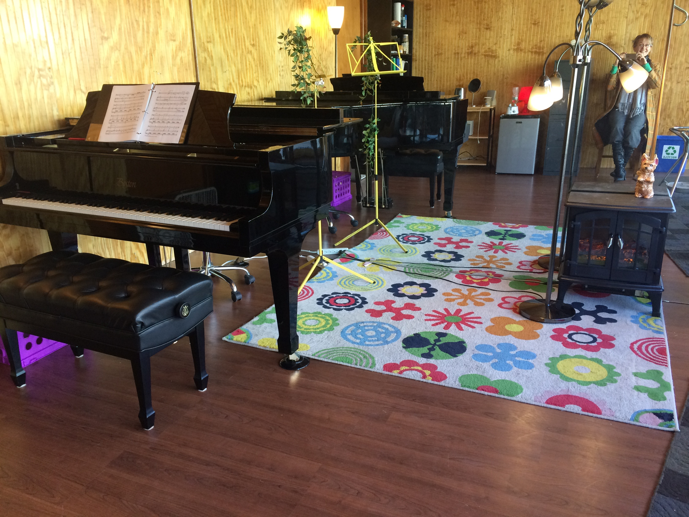

About Us
WholeTone Music Academy is a nurturing and rad place to Grow in Self & Sound! Our teachers will help you to develop into a joyful, soulful, skillful musician.
Now accepting new students of all ages, abilities, types, & stripes.
We feel strongly about community involvement. Our school offers our students frequent performances in retirement centers, nursing homes, and other community venues. We are always working on making people of all types and stripes welcome, and consider ourselves an LGBTQA safe space.
 Nora has been developing her dynamic teaching style since 2009, while simultaneously gaining stage experience around the Boston area and abroad. She received her MM in Vocal Performance and Pedagogy from Longy School of Music.
Nora has been developing her dynamic teaching style since 2009, while simultaneously gaining stage experience around the Boston area and abroad. She received her MM in Vocal Performance and Pedagogy from Longy School of Music.